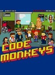

Code Monkeys
Stephen Klancher
...has seen 25
...has seen 0.4 hours
...has not seen 0 hours

Timeline
Most Recent:
Wrassle Mania
First Unseen:
Drunken Office Party (# 21)
...has seen 25
...has seen 0.4 hours
...has not seen 0 hours
Timeline
Most Recent:
Wrassle Mania
First Unseen:
Drunken Office Party (# 21)


Stephen Klancher: April 20, 2009 
Man I love the games they work into the series... They were just randomly in Marble Madness at one point, tunneling out of prison was Dig Dug, and then a killing spree became Contra. Also, a prison named Rapeville... haha
Stephen Klancher: May 7, 2009
And the moral is that if you find Hitler frozen in carbonite, don't unfreeze him.

Stephen Klancher: May 11, 2009
A Goonies flavored 420 adventure against the backdrop of Nancy Reagan's drug war? Awesome.
Stephen Klancher: June 16, 2009
Dean is a <i>genus</i>.
Smoking out of a bear's head: "Taking it out of a bear's head? I've really gotta get my life together." "It's like an apple but it tastes like bear thoughts." ...and then they ate the bear head...
Smoking out of a bear's head: "Taking it out of a bear's head? I've really gotta get my life together." "It's like an apple but it tastes like bear thoughts." ...and then they ate the bear head...
Stephen Klancher: June 16, 2009
Pepperoni and regret... my staples... "Dave's Day Off: One man's struggle to take 'er easy." Fun movie references in this one.
Stephen Klancher: June 30, 2009
GTA2 Style!
"You want a hand? I can get you a hand by 3pm. There are ways."
"I am lucky, I don't really know how I could get luckier... cool, hedgehogs! I guess I just got luckier. Oil! Awesome!"
"You want a hand? I can get you a hand by 3pm. There are ways."
"I am lucky, I don't really know how I could get luckier... cool, hedgehogs! I guess I just got luckier. Oil! Awesome!"